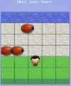
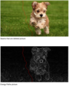
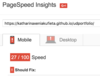

 Arcade Game Bugs!Bugs! is a variant of the arcade game Frogger. I practiced my JavaScript skills in this project.
 Content Aware Resizing of Images (CARI)I am implementing a web based application for content aware resizing of images. This is a long term project and work is still in progress.
 Website Performance OptimizationThis project was all about optimizing your website for speed, achieve a high score on PageSpeed Insights and run animations at a smooth 60 fps.

Given a poorly performing website, I made it run smoothly with 60 Frames per second. Don't burn your eyes!